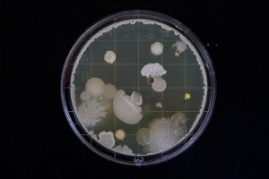

Мікробна сага. Хто, де і нащо?
Ну і хто ж такі ті мікроби?
Спочатку – про нудне, але сподіваємося, не надто нудно – про терміни. Коли ми кажемо мікроби , то маємо на увазі мікроорганізми. До слова, слово "мікроби" з'явилося в лексиконі французького хірурга Шарля Седійо. Насправді, ми не можемо зараз точно сказати, що це він його сам придумав, але саме Шарль товаришував із філологом Емілем Літтре, який на той час був упорядником словника та вніс туди це нове слово.
Мікробами , або жмікрорганізмами ми називаємо всі живі організми, які ми не здатні роздивитися без оптичних пристроїв. І ці організми насправді бувають дуже різні - бактерії, археї, найпростіші, мікроскопічні гриби чи водорослі.
Коротко про різницю між ними:
Бактерії – клітиночки, що не мають ядра і ще ряду компонентів, які є, наприклад, у наших з вами клітинах. Приклади бактерій – лактобацили, кишкова паличка, стафілокок. Археї – дуже схожі на бактерії (під мікроскопом навряд чи відрізниш), але дуже від них відрізняються генетично та хімічно . Особливо цікавою рисою археїв є те, що переважно саме вони здатні мешкати в екстремальних умовах, наприклад, в киплячій воді гейзерів чи дико солоній воді Мертвого моря.
Найпростіші мають ядро та загалом схожу будову клітин, як у нас. Просто вони дуже самостійні і маленькі. Це – відомі ще зі школи амеби, туфельки, євглена зелена. Мікроскопічні гриби також мають ядро, але, наприклад, уміють ще й утворювати міцелій. Прикладами мікроскопічних грибів є дріжджі чи пліснява.
Із назвами трохи розібралися, тепер – про масштаби
Якщо взяти все живе на нашій планеті і порахувати його масу, то оті всі мікроби складатимуть близько 15% від усього живого. А ми, люди, 0,01%. І якщо ми споглядаємо карту світу та бачимо мільйонні та мільярдні мегаполіси, де нас неймовірно багато і ми такі значимі, то де ж ті всі мікроби, яких в сотню разів більше, ніж нас?
Мікробна біомаса найбільшою мірою зосереджена на океанських глибинах а також, в грунтах . Окрім того, фактично, весь простір та всі існуючі поверхні на земній кулі більшою чи меншою мірою містять мікроорганізми. Кожен з нас носить у собі та на собі близько двох кілограм бактерій, які зосереджені переважно в кишківнику. І якщо наші кишкові бактерії, так би мовити, буквально ближче до тіла, то яка нам справа до тієї далекої невідомої глибоководної дрібноти?
Чому всі мікроби важливі?
Ми живемо не у закритому просторі. Ми дихаємо повітрям, п'ємо воду, споживаємо їжу та ходимо в туалет. І ось навіть ці всі базові потреби так чи інакше пов'язані із діяльністю бактерій.
Ціанобактерії, що населяють світовий океан, створили колись первісну кисневмісну атмосферу , що дало можливість живим організмам випхати носа на сушу. Завдяки мікроорганізмам утворюється грунт . На ньому ростуть рослини, які продовжують давати кисень, їжу та укриття. Мікроорганізми є ключем до перетворення речовин у природі, переводять органічні форми речовин в неорганічні і навпаки – наприклад, фіксують молекулярний азот з атмосфери і насичують ним грунт, розкладають всі відмерлі рештки, і наші в тому числі.
Наша мікробіота тренує наш імунітет , захищає від чужих патогенних бактерій, бере участь в нашому метаболізмі , обміні холестерину, статевих гормонів, може визначати нашу схильність до зайвої ваги та навіть депресій.
Нафта, газ, технології добування багатьох металів можливі завдяки діяльності мікроорганізмів. Так само як і кисломолочні продукти, тверді сири, квашені овочі, м'який хліб та, звичайно, всі алкогольні напої.
Тому та мізерна, у порівнянні із загальним числом, дрібка патогенних мікроорганізмів не варта того, щоб навіть думати про оголошення війни мікробам. Тим більше, що ми їх не переможемо. Ніколи. Чому – про це наступного разу.
А наразі сподіваємося, Ви вже розумієте, що в цьому немає ніякого сенсу :)

Photo by Michael Schiffer on Unsplash